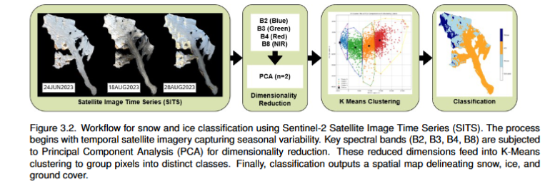
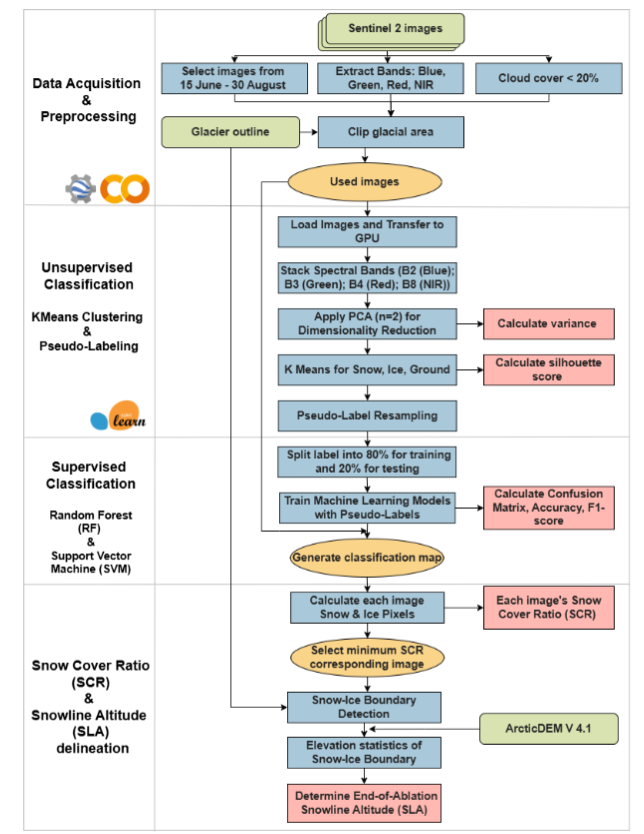
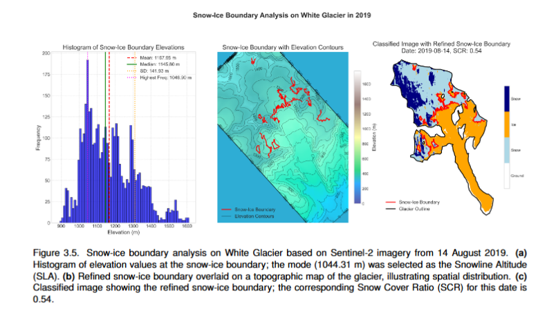

Scaling Impact: Co-Creating a Shared Framework for Teaching AI and Machine Learning with Applications in Arctic Research
Artificial intelligence (AI) and machine learning (ML) play an increasingly crucial role in Earth science teaching and research by accelerating large data analyses, data interpretation, enhancing predictive models, and making complex environmental processes more accessible to students and researchers alike. The first NSF Cyber2A workshop, held in October 2024, was designed to provide Arctic researchers who have a limited background in computer science and computing with the tools and knowledge of AI and ML.
The 2025 workshop will bring together AI and ML practitioners, instructors, and other experts to collaboratively improve and expand upon this curriculum while designing an extensible framework for delivering training in different course formats. The expected outcome of the workshop is a modular set of instructional materials and supporting guidance that educators can use to teach useful AI/ML techniques to environmental and geosciences researchers, and that self-motivated learners can use themselves to develop useful skills directly. While the instructional examples will focus on Arctic research contexts, we invite applications from individuals across a range of disciplines, professional backgrounds, and career stages who are actively engaged in the application of AI and ML in their teaching.
Who Should Attend
This workshop is ideal for:
- Faculty who are interested in offering AI-related courses centered on geoscience at their own institutions
- Trainers who are interested in adopting and enhancing our course materials to provide AI training in their training programs
- Applicants who have a solid foundation in Programming (Python, R, or similar) and AI & ML techniques
Workshop Objectives
Participants will:
- Review foundational and advanced AI/ML applications relevant to geoscience research (e.g., feature detection using computer vision models, text analysis using large language models)
- Develop pedagogical strategies for teaching AI/ML techniques to interdisciplinary research teams and students
- Promote open science practices and ethical AI use
- Foster a network of trained educators who can continue to build capacity within their institutions and regions
- Collaborate on reviewing, designing, and creating reusable AI/ML training content
AI & ML Tools & Techniques Covered
We will delve into:
- Principles and practices for preparing AI-ready training data
- AI model building fundamentals
- AI workflow validation, verification, and troubleshooting
- AI model deployment for on-demand or batch prediction
- Best practices in using tools and platforms such as Pytorch, MLOps, Tensorboard, and Tensorflow
Check out the curriculum from our 2024 workshop at https://cyber2a.github.io/cyber2a-course/.
Format
This is a highly collaborative and discussion-driven workshop. Expect a mix of presentations, small group activities, hands-on coding, and full room discussions.
Key Information
- Dates: October 20-24, 2025
- Location: In-person at The National Center for Ecological Analysis and Synthesis (NCEAS) in Santa Barbara, CA
- Cost: Support is provided by the Cyber2A award from NSF and we have limited funds to support travel and accommodations for onsite courses.
Hear From Our Alumni
I found the Cyber2A workshop to be very helpful and particularly relevant to my research. Currently, I am exploring the capability of using Deep Learning U-net models to incorporate information about atmospheric NOx from satellites, reanalysis, and surface measurements to make predictions that could inform air quality forecasts. Our hope is to investigate whether machine learning could offer a less computationally expensive option for such forecasts at high resolutions.
- Mikhail Schee, Postdoctoral Fellow at the University of Toronto
Since attending, I’ve been developing a KMeans-based method to classify glacier surface conditions using Sentinel-2 imagery. This unsupervised approach has helped me label snow, ice, and land areas, which I then use to train supervised machine learning classifiers to estimate snow cover ratios and snowline altitudes across the Canadian Arctic.
- Wai-Yin Cheung
Project Showcase: Click an image to enlarge
  

{kind=link}
{kind=link}
{kind=link}
Application
Ready to apply? Submit your application here.
Application Deadline: July 14, 2025
Please contact greco@nceas.ucsb.edu with any questions.
Organizers
ASU, NCEAS at UCSB, Woodwell Climate Center, UIUC, and NCSA
Sponsor
National Science Foundation under awards 2230034 and 2230035.